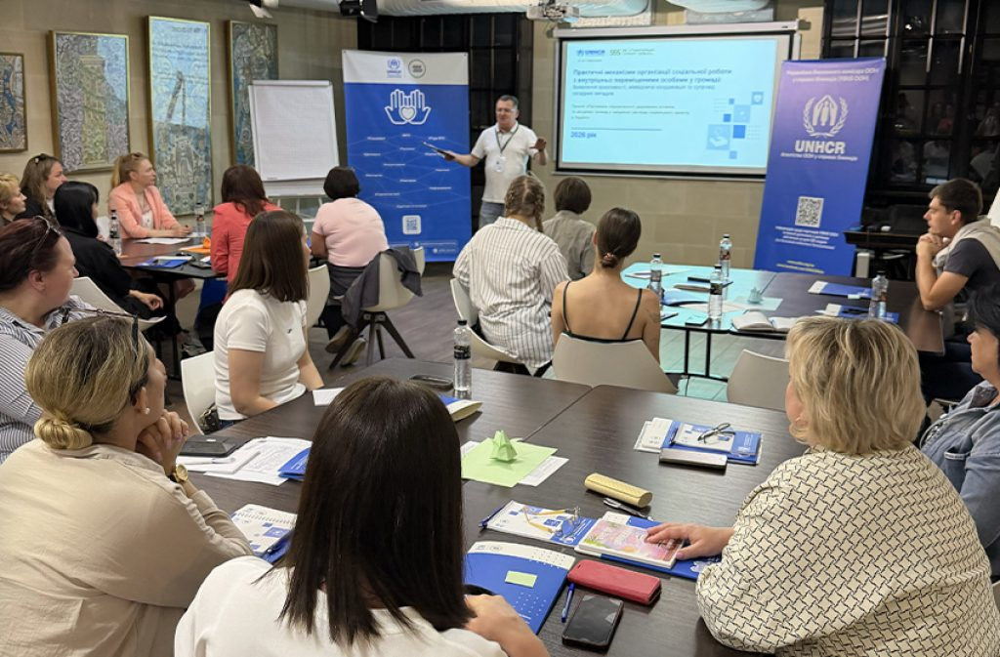
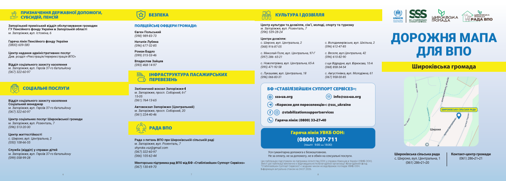

Підтримка спроможності державних установ та місцевих громад у зміцненні системи соціального захисту в Україні
Підтримуємо внутрішньо переміщених людей, постраждалих від війни, установи соціального захисту, громади та ради ВПО.
Дивитися результати
Про проєкт
1
Спроможні державні установи.Дієві ради ВПО.Доступний соціальний захист.
У 2026 році Благодійна організація «Благодійний фонд “Стабілізейшен Суппорт Сервісез”» продовжує проєкт «Підтримка спроможності державних установ та місцевих громад у зміцненні системи соціального захисту в Україні».
23 області
Пріоритетні напрями проєкту на 2026 рік
Від ініціатив до змін
Станом на липень 2026 року2
Ключові результати проєкту
2 376
індивідуальних консультацій і роз’яснень для фахівчинь і фахівців соціальної сфери
1 159
юридичних консультацій
для членкинь і членів рад ВПО
782
моніторингові візити
регіональних команд Офісу Омбудсмана
27
стратегічних сесій
для рад ВПО
10
форумів: 4 форуми соціальних змін і 6 форумів рад ВПО
27
громад підтримали в розробці соціальних паспортів
Підтримка установ соціального захисту, рад ВПО, територіальних громад і роботи Офісу Омбудсмана та адвокаційні кампанії.↓
8
Адвокаційні кампанії
Проводимо адвокаційні кампанії для вдосконалення нормативно-правових актів у галузі захисту прав внутрішньо переміщених людей.
Докладніше
9
Корисні інформаційні матеріали
У межах проєкту підготували й розповсюдили в громадах та онлайн корисні інформаційні матеріали.
Докладніше
Дорожня карта для ВПО, які прибувають у нову громаду
Розробили структуру дорожньої карти для ВПО, які прибувають у нову громаду, та надрукували серію таких матеріалів на запит громад.

Усі ці ініціативи ми реалізували завдяки проєкту «Підтримка спроможності державних установ та місцевих громад у зміцненні системи соціального захисту в Україні», що втілюється за підтримки Агентства ООН у справах біженців в Україні (УВКБ ООН).
На початок сторінки